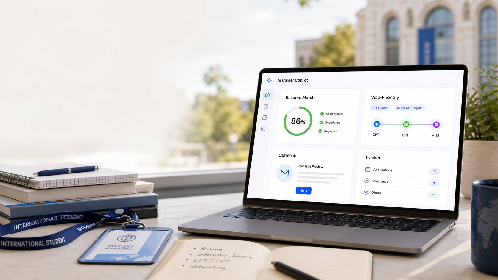

Resume improvements
Move React, Python, and REST API work into the top project bullets.

AI career copilot for students
Upload your resume, paste an internship link, and get a sharper application kit in minutes: resume fixes, ATS score, missing keywords, cover letter, outreach message, and interview prep.
Version 1
The MVP focuses on the daily pain: students already have a resume and a job post, but they do not know how to tune the application.
ATS fit score
78Move React, Python, and REST API work into the top project bullets.
Distributed systems, unit testing, PostgreSQL, Agile, debugging.
Drafted with school, project, and role-specific motivation.
Personalized LinkedIn note for alumni, recruiters, and engineers.
6 role-specific questions generated from the job post, including behavioral prompts and technical topics.
Sharper wedge
Most job tools stop at resume matching. PathPilot can become the system of record for visa-aware internship search: sponsorship signals, CPT readiness, OPT deadlines, and alumni outreach from the same country or university.
Version 2
Students can save jobs, track statuses, referrals, interviews, and offers while the AI recommends the next best action.
Agent roadmap
Turn each job post into a tailored resume plan, cover letter, outreach message, and interview set.
Track jobs, referrals, interviews, offers, and automated follow-ups in one place.
Search roles by location, pay, season, fit, visa policy, and probability of response.
Find alumni, recruiters, and engineers, then generate personalized outreach and follow-up timing.
Build the first cohort
Launch with international CS students, then expand into women in tech, scholarship seekers, hackathon applicants, and broader student internship workflows.